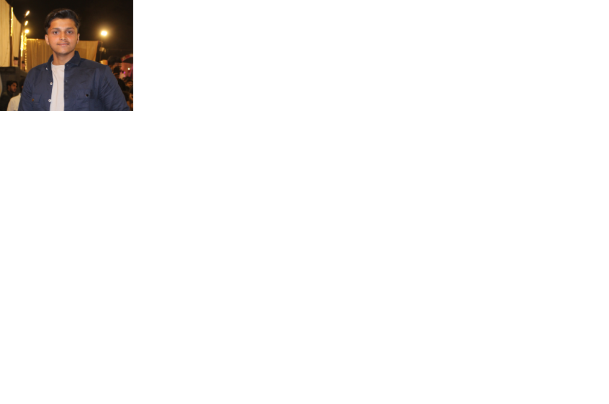

Ali Rizvi

Recent Bachelor of Technology graduate interested in Database
Administration. Proficient in C, Java, HTML, CSS, SQL, specializing in database
management. Skilled in designing, implementing, and optimizing structures.
Committed to ensuring data system reliability, security, and efficiency. Eager to
stay updated with industry trends and gain hands-on experience.
Education
2021-2025
Lucknow Institute Of Technology
Bachelor of Technology
- In a Bachelor of Technology program, I learned in-depth knowledge of coding languages like C, Python, HTML, and CSS.
- The fundamental principles of software development and web design using these coding languages.
- How to apply HTML and CSS to create visually appealing and user-friendly websites. Techniques for efficient data organization and retrieval through database management principles, particularly SQL.
- The potential career paths available in software engineering, web development, and database administration.
- The importance of problem-solving abilities and critical thinking skills in addressing challenges within the technology industry.
Project
(2024 - 2025)
- Teacher to NoteTransforms paper-based grading and attendance systems into digital solutions.
- The platform offers an intuitive interface for teachers to record grades, attendance, and essential data.
- Transitioning to digital enhances efficiency, accuracy, and accessibility in academic management.
- The aim is to improve the overall educational experience for educators and students.
- As the UI/UX designer, I shape the platform's user experience and interface design.
- Responsibilities include translating user needs into intuitive and visually appealing designs.
- Collaboration ensures the final product meets high standards, facilitating adoption by educators.
Skill's Summary
- Proficient in C programming language, mastering its syntax and
concepts. Skilled in Java, capable of developing robust and scalable
applications.
- Experienced in Python, proficient in writing efficient and clean code
for various applications.
- Proficient in HTML, capable of creating structured and semantic web
pages.
- Experienced in CSS, adept at styling web pages to enhance user
experience and visual appeal.
- Knowledgeable in SQL, proficient in database management and
querying to organize and retrieve data effectively
Experties
- Web Development
- Problem Solving
- Creative Thinking
- Team Work
- Effective Communication
Skills
- C
- Java
- Python
- SQL
- HTML
- CSS
- Git
- Web Design
Languages
Contact